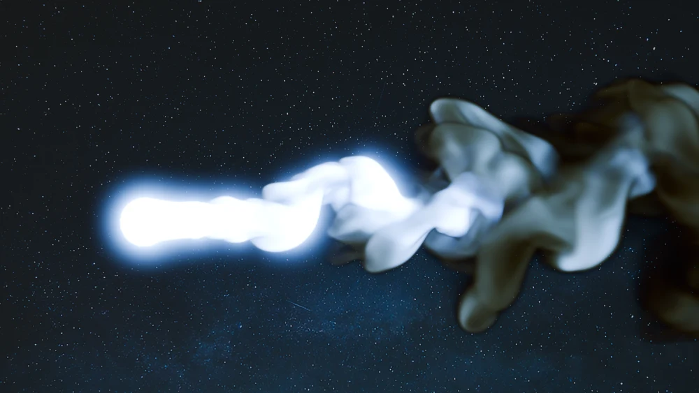
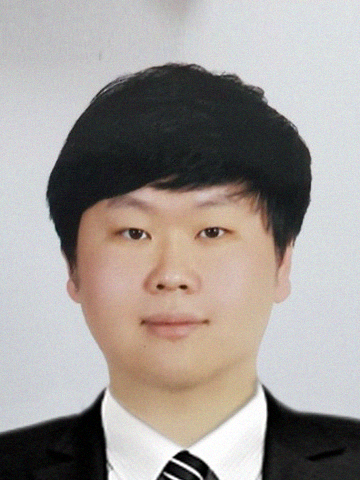
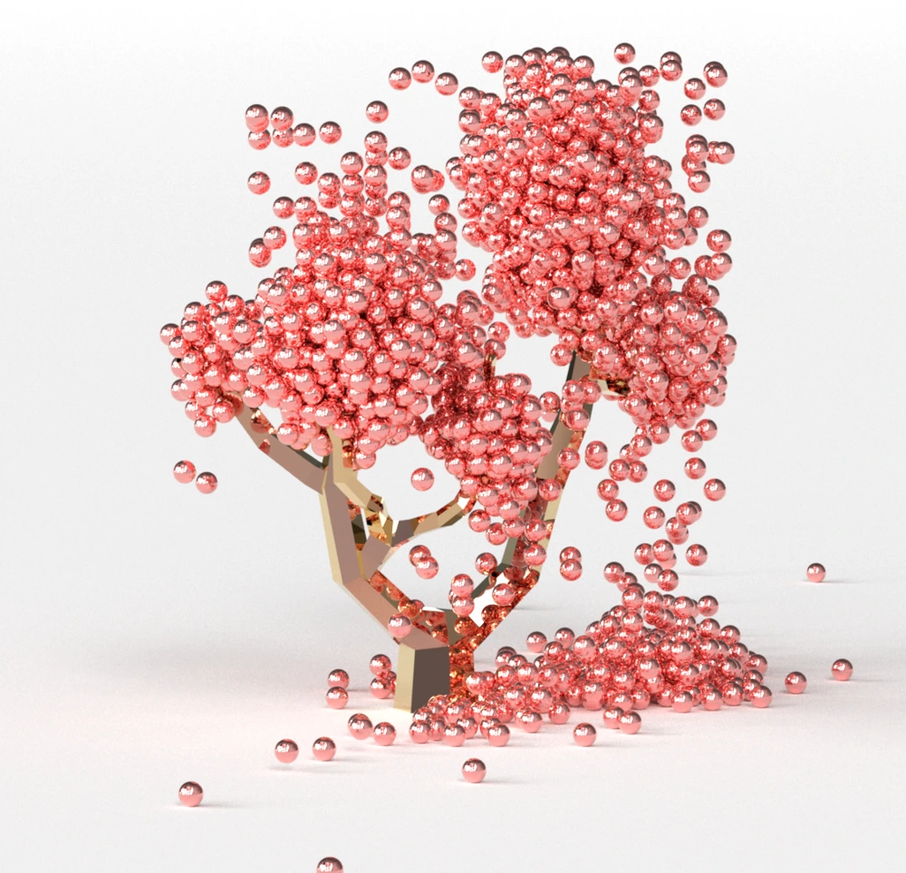
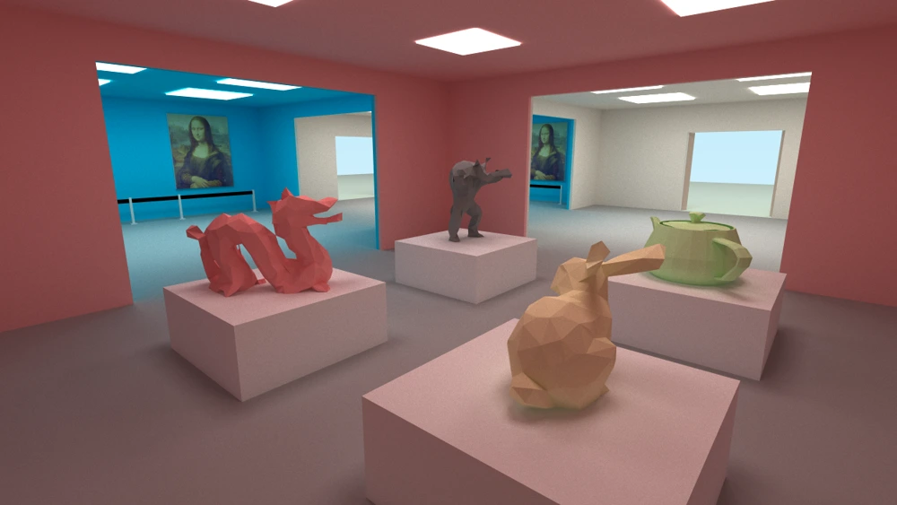
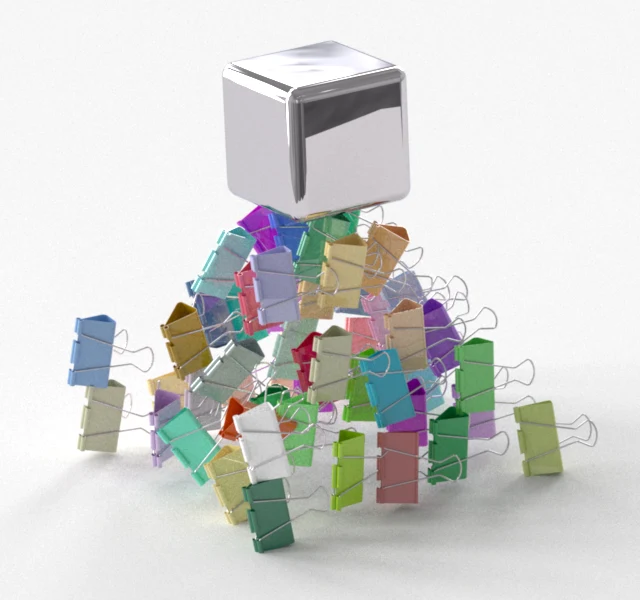
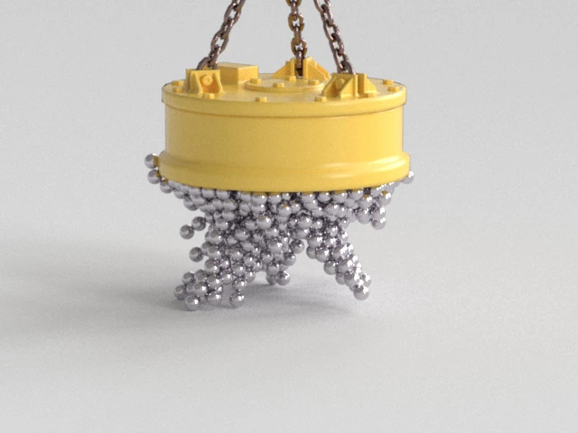

SIGGRAPH ASIA 2026 · ACM TOG 45(6)
Lanczos Advection: Near-Orthogonal Semi-Lagrangian Reconstruction for Fluid Simulation
Semi-Lagrangian reconstruction for fluid simulation.
COMPUTER GRAPHICS & PHYSICAL SIMULATION
Assistant Professor
Division of Computer Engineering
Hankuk University of Foreign Studies
I study how to simulate and render the physical world. My research spans physics-based animation, real-time simulation, and 3D rendering and visualization.
I direct the Real-time Graphics Lab at HUFS. Before joining HUFS in March 2024, I was a postdoctoral researcher at Korea University, where I also received my Ph.D. in Computer Science and Engineering.

RESEARCH INTERESTS
From magnetic interactions and fluid motion to the geometry of virtual worlds.
A selection of my work in physical simulation and rendering.

SIGGRAPH ASIA 2026 · ACM TOG 45(6)
Semi-Lagrangian reconstruction for fluid simulation.

SIGGRAPH ASIA 2022
Stable simulation of interactions between inducible magnets.

SIGGRAPH 2022 · ACM TOG 41(4)
Modeling and rendering virtual worlds with non-Euclidean geometry.

PACIFIC GRAPHICS 2020 · COMPUTER GRAPHICS FORUM 39(7)
Physical simulation of magnetic objects beyond simple primitive shapes.

SIGGRAPH 2018 · ACM TOG 37(4)
Magnetization dynamics for simulating interactions between magnetic objects.
2026 · CASA / COMPUTER ANIMATION AND VIRTUAL WORLDS 37(3)
2025 · COMPUTER ANIMATION AND VIRTUAL WORLDS 36(6)
2024 · CASA / COMPUTER ANIMATION AND VIRTUAL WORLDS 35(3)
2023 · CGI / COMPUTER ANIMATION AND VIRTUAL WORLDS 35(1)
2023 · CASA / COMPUTER ANIMATION AND VIRTUAL WORLDS 34(3–4)
2022 · ACM VRST
2020 · IEEE VR · BEST CONFERENCE PAPER NOMINEE
2018 · JOURNAL OF THE KOREAN PHYSICAL SOCIETY 72(9)